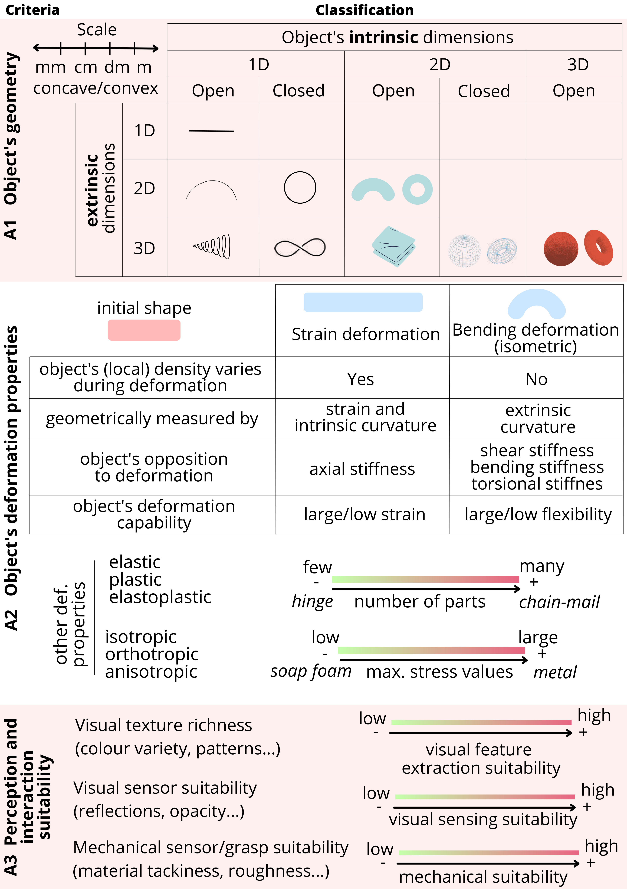

2.1 Deformable object: system characteristics

Table 1. Example of criteria from Sec. IIA applied to the characterisation of several shape control approaches.
| Method | A1 Geometry | A2 Deformation properties | A3 Perception and interaction suitability | |
|---|---|---|---|---|
| (Aranda et al., 2020) | 2D open intrinsic, 3D extrinsic | Bending (isometric), low stress limit | Rich visual texture | |
| (Shetab-Bushehri et al., 2022) | 2D open intrinsic, 3D extrinsic | Strain and bending, low stress limit | Rich visual texture | |
| (Qi et al., 2022) | 1D closed intrinsic, 3D extrinsic | Strain and bending, composite objects | Textureless | |
| (Cui et al., 2020) | 2D open intrinsic, 3D extrinsic | Large bending, low stress limit | - | |
| (J. Zhu et al., 2021) | 1D open and closed non-convex intrinsic, 3D extrinsic | Large strain and bending, medium stress | Textureless | |
| (A. Cherubini et al., 2020) | 2D open intrinsic, 3D extrinsic | Plastic behaviour (kinetic sand) | Textureless, cannot be grasped | |
| (López-Nicolás et al., 2020) | 1D closed convex and non-convex intrinsic, 3D extrinsic | Large strain and bending | - | |
| (Hu et al., 2019) | 3D intrinsic, 3D extrinsic | Large strain and bending, medium stress | Textureless | |
| (Cuiral-Zueco and López-Nicolás, 2021) | 2D open intrinsic, 3D extrinsic | Large strain and bending | Textureless | |
| (Cuiral-Zueco et al., 2023) | 2D open intrinsic, 2D extrinsic | Medium/low strain and bending | Textureless | |
| (Cuiral-Zueco and López-Nicolás, 2024) | 2D open or closed intrinsic, 3D extrinsic | Medium strain and large bending | Textureless | |
| (Caporali et al., 2024) | 1D open intrinsic, 3D extrinsic (DLOs) | Low strain and large bending | Textureless | |
| (Deng et al., 2024) | 2D open or closed intrinsic, 3D extrinsic | Medium strain and large bending | Textureless |
Deformable objects constitute the system to be controlled. From the shape control perspective it is important to provide information about their geometry, their deformation properties and their suitability for perception and interaction. We propose three criteria for characterising deformable objects (See Fig. 2 and Table 1).
2.1.1 Object's geometry
The object's geometry is crucial for this taxonomy (criterion A1 in Fig. 2). Regarding shape control dimensionality, some authors refer to the dimensions of the object's geometry whereas others refer to the dimensions of the space in which the object is being manipulated, thus leading to confusion. Adopting mathematical terminology, we propose the distinction between intrinsic and extrinsic frames.
The intrinsic reference frame is mounted on the object and allows describing the intrinsic object properties without referencing to a larger dimensional space. On the other hand, the extrinsic frame of reference can be defined within the object's dimensionality or refer to a larger dimensional space where the shape control process takes place (i.e., the object's embedding). This distinction is relevant as it allows to properly define both the object and the dimensional scope of a shape control strategy. Controlling the shape of a 1D object like a cable (intrinsic coordinates) embedded in 3D space (extrinsic coordinates) might involve different approaches and strategies compared to controlling the same object in a 2D space (e.g. a cable lying on a table).
Objects with intrinsic 1D geometries, also known as Deformable Linear Objects (DLOs), are usually represented as open (with endpoints) or closed curves (forming continuous loops). Closed curves also serve to describe the shape of intrinsic 2D open geometries when they are embedded in 2D, as their boundary (i.e., their contour) constitutes a continuous loop. However, when embedded in 3D, open 2D geometries cannot be fully described through their contour as this representation leads to ambiguities. For example, a circular contour constitutes the boundary of both a cone and a hemisphere.
Closed 2D domains, regardless of their embedding, inherently lack boundaries and therefore have no contours. However, visual contours are often used to retrieve the object's shape from lower-dimensional projections of the object's shape (e.g., a circle as the visual contour of a sphere projected in a 2D image). We refer to these ``visual boundaries'' as apparent contours. Similarly to the contours of open 2D domains that are embedded in 3D, apparent contours lead to ambiguities. To ensure proper representation of intrinsic 2D or 3D geometries that are embedded in 3D, it is necessary to employ a surface representation, rather than relying on apparent contours.
The boundary of volumetric dense objects is defined by the 2D surface that encloses them. When the enclosed volume contains no internal holes, a closed 2D surface can fully represent the object's geometry. However, when willing to describe the shape of objects with holes, several curves or surfaces might be needed. To properly characterise the existence of holes in a shape, we propose using the topological term genus, which refers to the number of holes (e.g., a sphere is a genus 0 surface whereas a doughnut is a genus 1 surface).
Other important aspects regarding the object's geometry are its scale and its convexity as they are directly related to the object's suitability for grasping or gripper positioning (e.g. larger objects allow for a larger number of grippers to be placed, concave object's might be hard to grasp in certain points due to gripper-to-object collisions).
2.1.2 Object's deformation properties
Considering the object's deformation properties, we propose a classification with respect to the object's deformation capabilities, regarding both the type and the amount of deformation it can undergo (criterion A2 in Fig. 2). In relation to the deformation type, in the context of deformable solid mechanics, materials are classified according to the mechanical or thermodynamic magnitudes and characteristics that are relevant to their deformation process (e.g. elastic, plastic, isotropic, etc.), amongst other criteria. This can be useful for those shape control applications that focus on object's made of known and well-characterised materials. However, seeking practicality, we propose classifying the object's deformation capability into two types:
Strain deformation: it causes a significant density variation on the object (locally or globally). The object' s resistance to this kind of deformation is measured by its axial stiffness. The geometrical measurements of the amount of intrinsic deformation are the strain (which compares the object' s increase or decrease in length, area, or volume along different directions) and, for intrinsic 2D and 3D objects, the changes in intrinsic curvature (e.g. Gaussian curvature).
Bending (isometric) deformation: it does not cause significant variations in the object's density (neither locally nor globally). The object' s resistance to this deformation is measured by its shear, bending and torsional stiffness. The geometrical measurement of the amount of extrinsic deformation is the change in extrinsic curvature (e.g. mean curvature).
As an illustrative example and considering both types of deformation, a sheet of paper is a 2D object that cannot undergo strain deformations (very low strain) but can bend isometrically when embedded in 3D space (large flexibility). Deformations can be further categorized based on the object's mechanical properties into elastic, plastic, and elasto-plastic, which describe the material's behaviour under stress. Additionally, the material's structural characteristics can be isotropic, orthotropic, or anisotropic, each defining how the properties of the material vary in different deformation directions.
Certain deformable objects may consist of multiple components joined together mechanically. This is the case of agglomerates, which can be characterised through their physical properties (e.g., density, consistency index), and mechanisms. We classify mechanisms with respect to the number of parts that constitute them (as it provides an estimation on how the object behaves mechanically) into mechanisms with few parts (e.g. a hinge, that behaves like two solid objects attached together) and many parts (e.g. chain-mail, which behaves very much like cloth). Recall that proposed classification criteria allow for the combination of characteristics. For example, a mechanism could present both large or fine parts and those parts could present diverse deformable behaviours.
The last deformation property we include is the object's elastic limit and breaking stress. Some shape control applications need to be especially careful not to reach the breaking stress during the deformation process, and thus the shape control strategy can be strongly influenced by this constraint.
2.1.3 Object's perception and interaction suitability
One of the main challenges in shape control is the perception and interaction/actuation process (criterion A3 in Fig. 2). In the case of visual sensors, visual texture richness allows retrieving information (e.g., visual descriptors). The object's optical properties (e.g. the material's reflectivity) can determine the object's suitability for visual sensors such as RGB-D cameras. Other aspects such as the material's tackiness or roughness have a strong influence in the suitability of the grasping process or the use of mechanical sensors like strain gauges or tactile sensors. If a method strongly relies on specific sensors or actuators, such limitations should be properly stated for a proper characterisation of the approach.